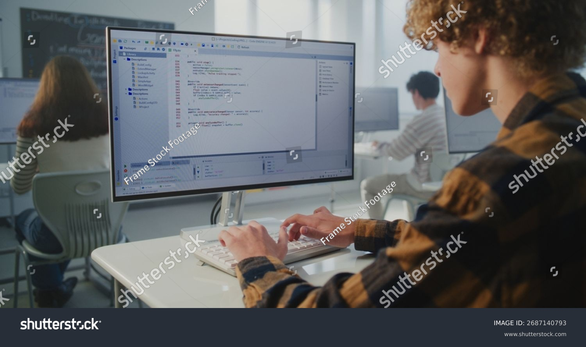

Mis habilidades

A lo largo de mi trayectoria he desarrollado diversas habilidades relacionadas con la educación, la informática y el trabajo colaborativo.
Habilidades principales
- Manejo de herramientas informáticas.
- Diseño de actividades educativas digitales.
- Uso de Word, PowerPoint y otras aplicaciones.
- Desarrollo web básico con HTML.
- Resolución de problemas tecnológicos.
- Trabajo en equipo y comunicación.